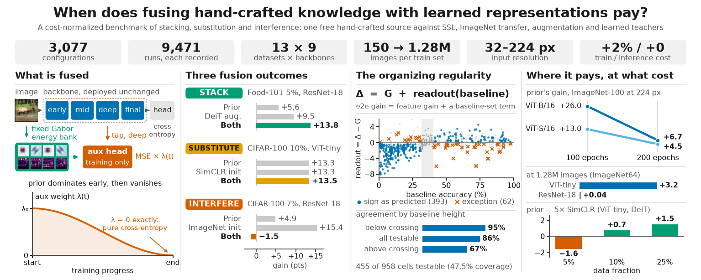
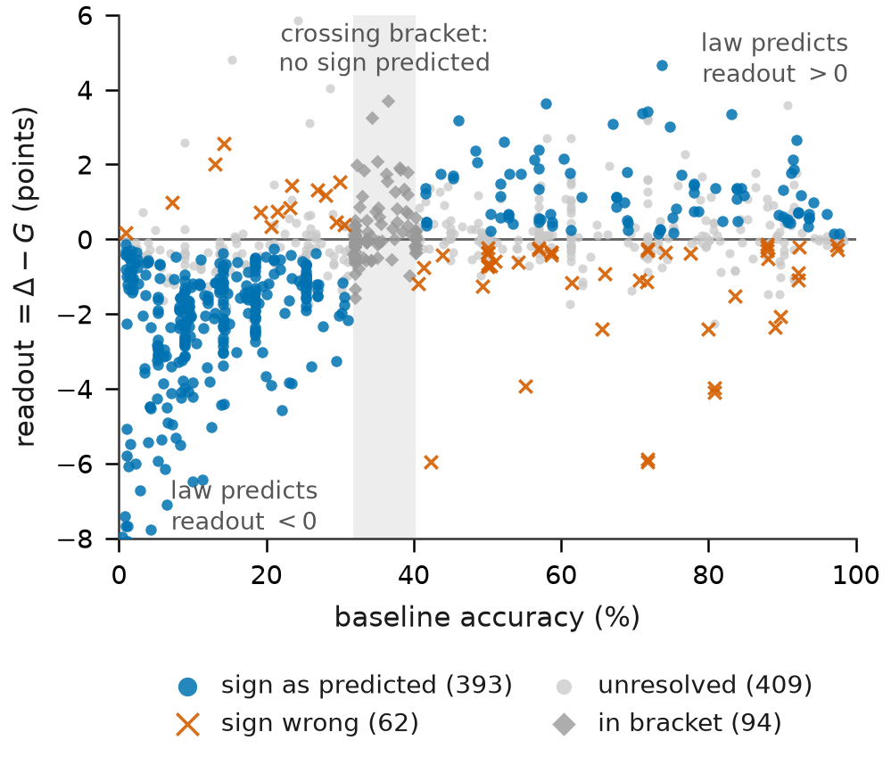
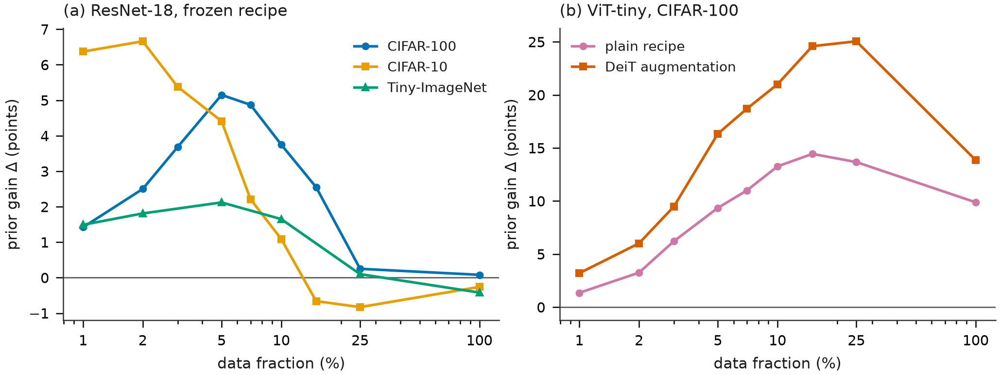

When does fusing hand-crafted knowledge with learned representations pay?
A cost-normalized benchmark of stacking, substitution and interference


TL;DR
A free, hand-crafted spectral prior is worth more to a small transformer than two rounds of self-supervised pre-training. To a convolutional network that already has enough data it is worth nothing at all. And at your own label budget, a linear evaluation of frozen features predicts the end-to-end gain to within 0.17 points.
We ran the comparison the field keeps making informally: every intervention under one frozen recipe, on byte-identical images, with its compute cost declared. The gain then decomposes as Δ = G + readout(base): what a source does to the features, plus what the classifier can cash in. The sign of that second term is correct on 86.4% of the cells that can test it. Sources supplying the same currency substitute; sources supplying different ones can stack; fusing a strong shaping prior into an already-informed initialization interferes in proportion to what that initialization was worth, at full auxiliary strength and not below it. A rule built on that reading separates the three outcomes in hindsight but, run prospectively on nine untrained pairs, called one, and we report that as a result.
Abstract
Fusing prior knowledge with data-driven learning is attractive where data is scarce, yet no controlled account says when it helps, is redundant, or harms. We benchmark one fixed hand-crafted knowledge source, a pinned bank of Gabor targets injected only during training at ~2% overhead, against data-driven alternatives (SimCLR, SimSiam, DINO and masked-reconstruction pre-training, ImageNet transfer, augmentation, learned teachers) under one frozen recipe with fixed subsets: 13 datasets, 9 backbones, 150 to 1.28M images, 32–224 px, 2.5M–86M parameters (3,077 classification configurations over 9,471 runs, plus segmentation and detection transplants).
Every pairwise combination we measure at training time follows one rule (decision-level fusion differs). Different-currency sources can stack: the prior composes with DeiT augmentation on attention backbones and is worth +26 points to ViT-B/16 at 224 px, +6.7 at twice that budget. Same-currency sources substitute: against effective self-supervised pre-training the combination never usefully exceeds the better single source. Fusing at full strength into an already-informed initialization interferes in proportion to what it carries: ImageNet transfer, −15 to −17 points, removed by a weaker auxiliary weight. Each source's currency is measurable on frozen features from that source alone, which separates the three outcomes but does not predict them: as a procedure on untrained pairs it calls one of nine. At a practitioner's own label budget the frozen-feature gain predicts the end-to-end gain to within 0.17 points across 30 cells and seven datasets; the underlying decomposition, Δ = G + readout(base), holds in sign on 86.4% of testable cells and called an unseen backbone family's feature gain in advance.

The three outcomes
Combining two sources of knowledge produces one of three outcomes, and which one you get is not predictable from the sources' family names. The same prior is redundant with effective self-supervision and complementary with augmentation. A cheap measurement on frozen features, taken on each source alone, separates the three after the fact; a rule built on it and run prospectively on nine untrained pairs called one, so the taxonomy is something the measurement organizes, not something it predicts.
Stack: different currencies
The prior injects oriented-energy structure; heavy augmentation teaches invariance to nuisance transforms. Different currencies, so they can compound. On ViT-tiny at 10% of CIFAR-100, the prior adds +13.3 under the plain recipe and +21.0 on top of DeiT augmentation. Necessary, not sufficient: on two convolutional populations outside the selection set the same pairing stacks at one cell of six.
Substitute: same currency
The prior and contrastive pre-training fill the same feature deficit, so the combination never usefully exceeds the better single source (at most about a point above it, never near additivity). Measured on the feature side: whichever source has the larger frozen-feature gain is the one that wins end-to-end, at 6 cells out of 6 across two datasets.
Interference: fusing into an already-informed initialization
Injecting the prior on top of ImageNet weights is destructive everywhere, and the damage is proportional to what the initialization was contributing and to how hard the prior shapes: −15 to −17 points on photographic data at full auxiliary strength (ten seeds per arm), vanishing below it, and statistically zero on histopathology where those weights were worth little to begin with. Probing confirms the loss is feature-side, not a classifier failure.
The rule

Where the gain lives

Selected results
Attention at small scale is where the prior matters most
| CIFAR-100, ViT-tiny | Baseline | + Prior | Δ |
|---|---|---|---|
| Plain recipe, 10% | 16.47 | 29.74 | +13.26 |
| DeiT augmentation, 10% | 20.28 | 41.29 | +21.00 |
| DeiT augmentation, 100% | 61.39 | 75.25 | +13.86 |
| ViT-S/16 @224 px, ImageNet-100, 100 ep | 65.39 | 78.39 | +13.00 |
| ViT-B/16 @224 px, ImageNet-100, 100 ep | 43.33 | 69.34 | +26.01 |
| ViT-S/16, ImageNet-100, 200 ep | 79.47 | 83.99 | +4.52 |
| ViT-B/16, ImageNet-100, 200 ep | 75.31 | 82.02 | +6.71 |
The deficit grows with model scale rather than shrinking, at both budgets: +6.71 against +4.52 at 200 epochs, where both models are trained. It persists at 1.28M images where every ResNet is neutral (+0.04). Masked reconstruction (MAE-style, 2× compute), added on ViT-tiny, lands level with SimCLR and the prior under the plain recipe (20.5 / 29.5 / 42.7 at 5 / 10 / 25%) and 6.8 to 7.6 points below the prior under DeiT augmentation; its feature gains sit below the prior's, so it reads as more of the same currency, not a new one.
Cost normalization, and what happens when the comparator gets more
| CIFAR-100, ResNet-18 | Cost | 5% | 10% | 25% |
|---|---|---|---|---|
| Prior (this work) | 1.02× | +5.15 | +3.75 | +0.16 |
| SimSiam, 200 pre-epochs | 2.00× | +0.13 | +0.61 | −0.03 |
| SimCLR, 200 pre-epochs | 2.00× | +9.05 | +8.76 | +2.81 |
| SimCLR, 800 pre-epochs | 5.00× | +14.38 | +10.92 | +2.77 |
Reported plainly: on convolutional backbones, once you can afford 5× compute, contrastive pre-training beats the free prior at every fraction we measured. The prior's convolutional case is one of cost, not accuracy. On attention backbones under a modern recipe the ordering differs, and the paper states it with both its budget and its data regime attached.
Does any of it hold off classification?
Every number above is top-1 accuracy, so the prior was transplanted to two other tasks. Both headline results are negative, which is why they are worth reporting.
Whatever the prior supplies is cashed fully by a whole-image classifier, partly by a per-pixel one, and not at all by a coordinate regressor.
A procedure for deciding whether to fuse, and its prospective test
If the taxonomy had practical content beyond description, it would be that the outcome can be estimated before the combined system is built, from measurements of each source alone. We stated that as a hypothesized procedure, registered its calls on thirteen pairs whose combinations had never been trained, and only then trained them. The procedure reads each source's frozen-feature gain, returns interfere for a mature initialization, n/a when a source supplies nothing, substitute when the two gains are close and both arms fix the same cells, and stack otherwise.
What does predict: at a practitioner's own label budget, a linear evaluation of frozen features predicts the end-to-end gain to within 0.17 points on average across 30 cells, 8 datasets and baselines from 5 to 94%. Measure G at your budget and you know Δ without training the cell. The full-label sign law is the corollary of that measurement, and the paper names its mechanism: a label-rich probe sees more than a label-starved classifier can cash in.
Two sensors, and when a second one pays
Two multi-source populations that differ in how far apart the sources are. Splitting one instrument's bands (EuroSAT-MS: Sentinel-2 visible against non-visible) is complementary at every fraction, +0.45 to +2.96 over the better single source. Pairing two satellites (So2Sat LCZ42: Sentinel-1 radar with Sentinel-2 optical) never pays, landing between −0.73 and ±0.00 against optical alone, though radar reaches 35–53% on its own against a 5.9% chance rate. Had we run only the multispectral population we would have reported that a second sensor stacks; the first genuinely cross-modality test contradicts it. The two populations also differ in source asymmetry, and the design cannot separate "too unequal" from "cross-modal"; the paper reports a contrast, not a predictor.
The benchmark
| Scale | 3,077 classification configurations over 9,471 training runs, plus 216 segmentation and 36 detection runs |
|---|---|
| Datasets | 13, spanning natural images, satellite, texture, fine-grained, food and histopathology, plus multi-sensor Sentinel-1/2 pairs |
| Backbones | 9 across 5 families: ResNet-18/34/50, ConvNeXt, MobileNetV3, Swin, ViT-tiny/S/B |
| Data scale | 150 to 1.28M images; 32 to 224 px; 2.5M to 86M parameters |
| Comparators | SimCLR, SimSiam, DINO, masked reconstruction, ImageNet transfer, DeiT augmentation, learned teachers, each at a declared multiple of baseline training cost |
| Protocol | One frozen recipe; fixed per-class subset indices shared by every run; numerically pinned filter banks; every table regenerated by command |
Acknowledgments
This work was partially funded by the EU project FoodWISE, 2021-SGR-01094 (AGAUR), Icrea Academia'2022 (Generalitat de Catalunya), and Grants PID2025-173459NB-C21 (BRIDGE-AI) and AIA2025-163919-C51 (EXPLORA), funded by MICIU/AEI, by FEDER (UE), and by European Union NextGenerationEU/PRTR. A. AlMughrabi acknowledges the support of FPI Becas, MICINN, Spain. The authors thankfully acknowledge the RES resources provided by the Barcelona Supercomputing Center on MareNostrum5 for IM-2025-3-0008.